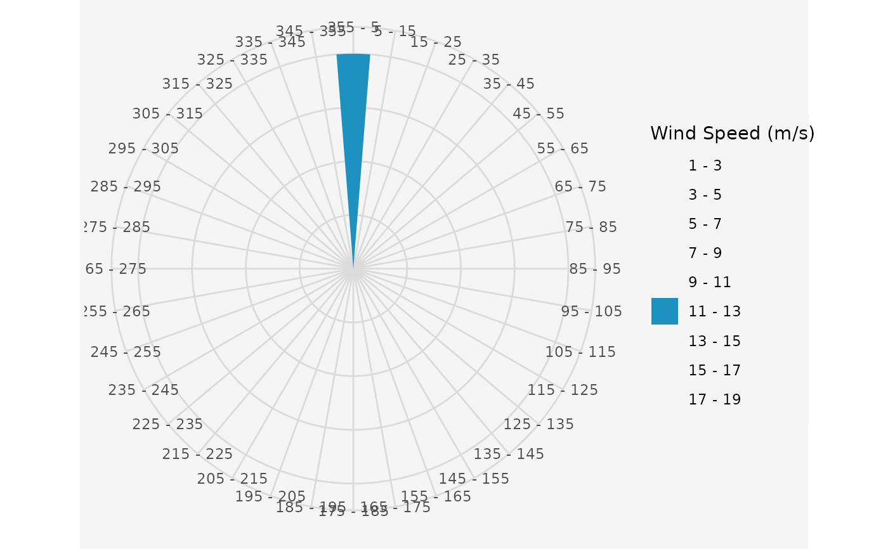
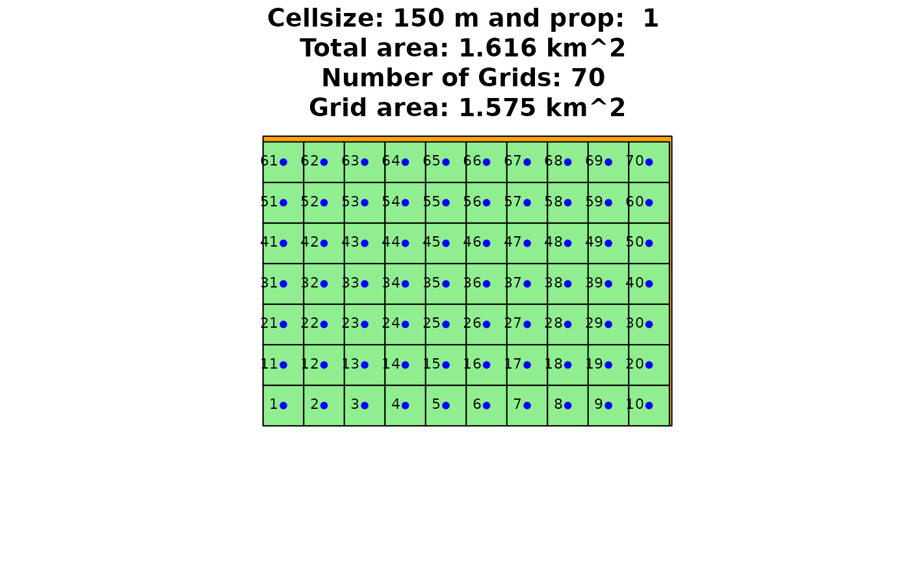
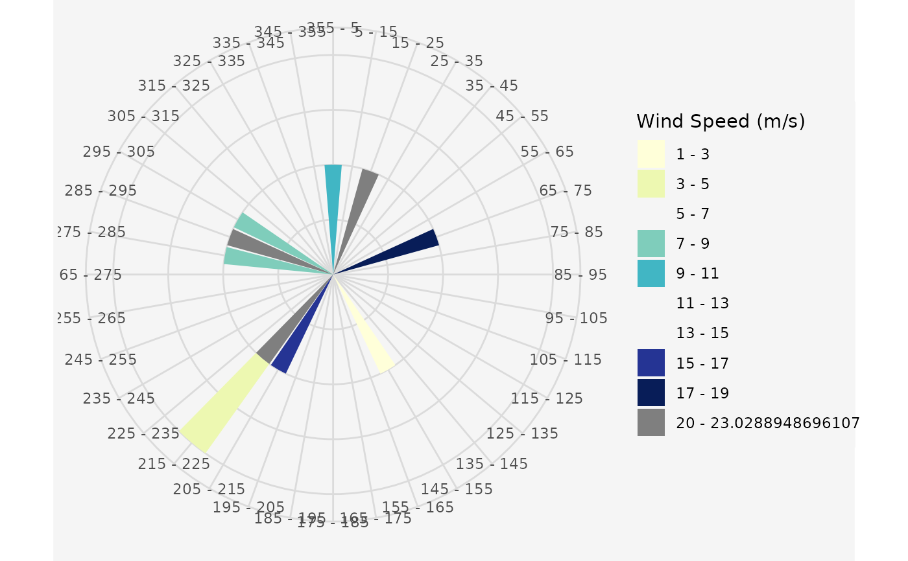
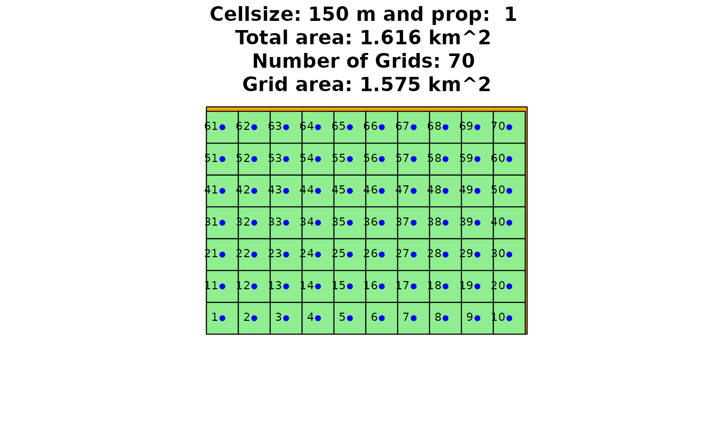
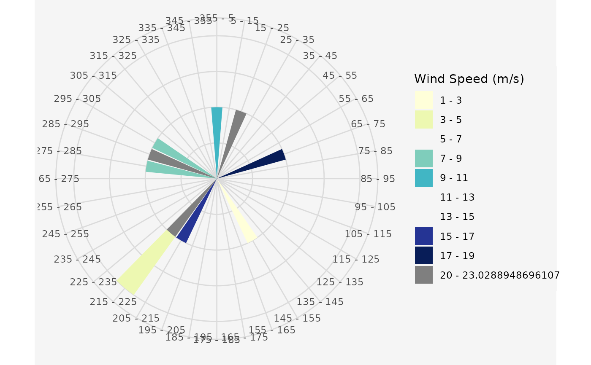

Calculate the energy output and efficiency rates of an individual in the current population under all given wind directions and speeds. If the terrain effect model is activated, the main calculations to model those effects will be done in this function.
Usage
calculate_energy(
sel,
referenceHeight,
RotorHeight,
SurfaceRoughness,
wnkl,
distanz,
polygon1,
RotorR,
dirSpeed,
srtm_crop,
topograp,
cclRaster,
weibull,
plotit = FALSE
)Arguments
- sel
A matrix of an individual of the current population
- referenceHeight
The height at which the incoming wind speeds were measured. Default is
RotorHeight- RotorHeight
The height of the turbine hub
- SurfaceRoughness
A surface roughness length in meters. With the terrain effect model, a surface roughness is calculated for every grid cell using the elevation and land cover data. Default is
0.3- wnkl
The angle from which wake influences are considered to be negligible
- distanz
The distance after which wake effects are considered to be eliminated
- polygon1
The considered area as Simple Feature Polygon
- RotorR
The desired rotor radius in meter
- dirSpeed
The wind speed and direction data.frame
- srtm_crop
The first element of the
terrain_modelresulting list- topograp
Boolean value, which indicates if the terrain effect model should be enabled or not. Default is
FALSE- cclRaster
The second element of the
terrain_modelresulting list- weibull
A boolean value that specifies whether to take Weibull parameters into account. If
TRUE, the wind speed values ofvdirspeare ignored. The algorithm will calculate the mean wind speed for every wind turbine according to the Weibull parameters. Default isFALSE- plotit
If
TRUE, the process will be plotted. Default isFALSE
Value
Returns a list of an individual of the current generation with resulting wake effects, energy outputs, efficiency rates for every wind direction. The length of the list corresponds to the number of different wind directions.
See also
Other Wind Energy Calculation Functions:
barometric_height(),
circle_intersection(),
get_dist_angles(),
turbine_influences()
Examples
# \donttest{
## Create a random Polygon
library(sf)
#> Linking to GEOS 3.12.1, GDAL 3.8.4, PROJ 9.4.0; sf_use_s2() is TRUE
Polygon1 <- sf::st_as_sf(sf::st_sfc(
sf::st_polygon(list(cbind(
c(4498482, 4498482, 4499991, 4499991, 4498482),
c(2668272, 2669343, 2669343, 2668272, 2668272)
))),
crs = 3035
))
## Create a uniform and unidirectional wind data.frame and plot the
## resulting wind rose
data.in <- data.frame(ws = 12, wd = 0)
windrosePlot <- plot_windrose(
data = data.in, spd = data.in$ws,
dir = data.in$wd, dirres = 10, spdmax = 20
)

## Assign the rotor radius and a factor of the radius for grid spacing.
Rotor <- 50
fcrR <- 3
resGrid <- grid_area(
shape = Polygon1, size = Rotor * fcrR, prop = 1,
plotGrid = TRUE
)
 
## Assign the indexed data frame to new variable. Element 2 of the list
## is the grid, saved as Simple Feature Polygons.
resGrid1 <- resGrid[[1]]
## Create an initial population with the indexed Grid, 15 turbines and
## 100 individuals.
initpop <- init_population(Grid = resGrid1, n = 15, nStart = 100)
## Calculate the expected energy output of the first individual of the
## population.
par(mfrow = c(1, 2))
plot(Polygon1)
points(initpop[[1]][, "X"], initpop[[1]][, "Y"], pch = 20, cex = 2)
plot(resGrid[[2]], add = TRUE)
resCalcEn <- calculate_energy(
sel = initpop[[1]], referenceHeight = 50,
RotorHeight = 50, SurfaceRoughness = 0.14, wnkl = 20,
distanz = 100000, dirSpeed = data.in,
RotorR = 50, polygon1 = Polygon1, topograp = FALSE,
weibull = FALSE
)
resCalcEn <- as.data.frame(resCalcEn)
plot(Polygon1, main = resCalcEn[, "Energy_Output_Red"][[1]])
points(x = resCalcEn[, "Bx"], y = resCalcEn[, "By"], pch = 20)
## Create a variable and multidirectional wind data.frame and plot the
## resulting wind rose
data.in10 <- data.frame(ws = runif(10, 1, 25), wd = runif(10, 0, 360))
windrosePlot <- plot_windrose(
data = data.in10, spd = data.in10$ws,
dir = data.in10$wd, dirres = 10, spdmax = 20
)

## Calculate the energy outputs for the first individual with more than one
## wind direction.
resCalcEn <- calculate_energy(
sel = initpop[[1]], referenceHeight = 50,
RotorHeight = 50, SurfaceRoughness = 0.14, wnkl = 20,
distanz = 100000, dirSpeed = data.in10,
RotorR = 50, polygon1 = Polygon1, topograp = FALSE,
weibull = FALSE
)
# }

## Assign the indexed data frame to new variable. Element 2 of the list
## is the grid, saved as Simple Feature Polygons.
resGrid1 <- resGrid[[1]]
## Create an initial population with the indexed Grid, 15 turbines and
## 100 individuals.
initpop <- init_population(Grid = resGrid1, n = 15, nStart = 100)
## Calculate the expected energy output of the first individual of the
## population.
par(mfrow = c(1, 2))
plot(Polygon1)
points(initpop[[1]][, "X"], initpop[[1]][, "Y"], pch = 20, cex = 2)
plot(resGrid[[2]], add = TRUE)
resCalcEn <- calculate_energy(
sel = initpop[[1]], referenceHeight = 50,
RotorHeight = 50, SurfaceRoughness = 0.14, wnkl = 20,
distanz = 100000, dirSpeed = data.in,
RotorR = 50, polygon1 = Polygon1, topograp = FALSE,
weibull = FALSE
)
resCalcEn <- as.data.frame(resCalcEn)
plot(Polygon1, main = resCalcEn[, "Energy_Output_Red"][[1]])
points(x = resCalcEn[, "Bx"], y = resCalcEn[, "By"], pch = 20)
## Create a variable and multidirectional wind data.frame and plot the
## resulting wind rose
data.in10 <- data.frame(ws = runif(10, 1, 25), wd = runif(10, 0, 360))
windrosePlot <- plot_windrose(
data = data.in10, spd = data.in10$ws,
dir = data.in10$wd, dirres = 10, spdmax = 20
)

## Calculate the energy outputs for the first individual with more than one
## wind direction.
resCalcEn <- calculate_energy(
sel = initpop[[1]], referenceHeight = 50,
RotorHeight = 50, SurfaceRoughness = 0.14, wnkl = 20,
distanz = 100000, dirSpeed = data.in10,
RotorR = 50, polygon1 = Polygon1, topograp = FALSE,
weibull = FALSE
)
# }